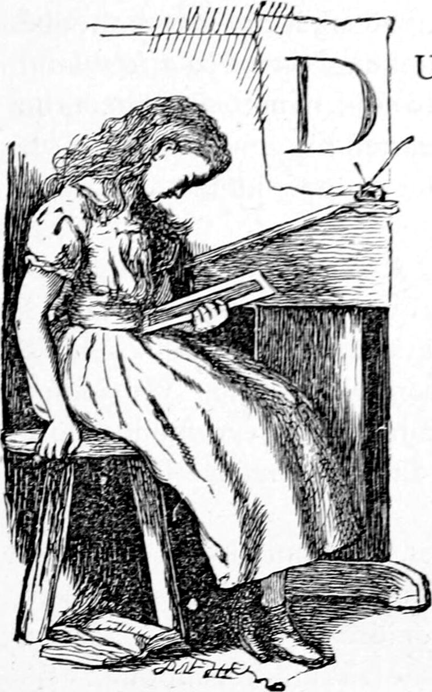
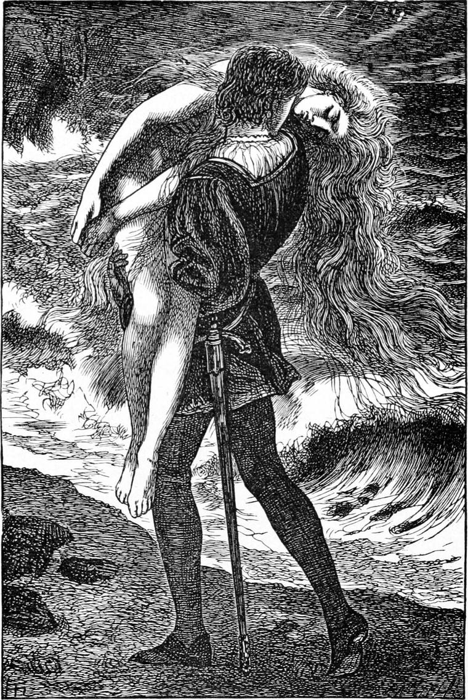
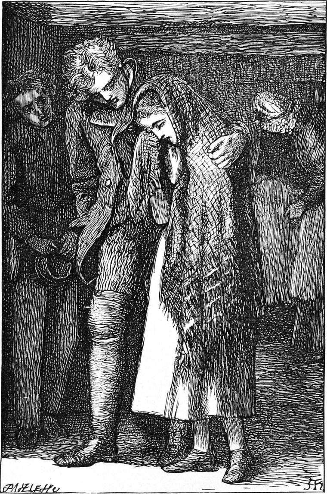

During all that winter I attended the evening school and assisted the master. I confess, however, it was not by any means so much for the master as to be near Elsie Duff, of whom I now thought many times an hour. Her sweet face grew more and more dear to me. When I pointed out an error in her work, or suggested a better mode of working, it would flush like the heart of a white rose, and eagerly she would set herself to rectification or improvement, her whole manner a dumb apology for what could be a fault in no eyes but her own. It was this sweetness that gained upon me: at length her face was almost a part of my consciousness. I suppose my condition was what people would call being in love with her; but I never thought of that; I only thought of her. Nor did I ever dream of saying a word to her on the subject. I wished nothing other than as it was. To think about her all day, so gently that it never disturbed Euclid or Livy; to see her at night, and get near her now and then, sitting on the same form with her as I explained something to her on the slate or in her book; to hear her voice, and look into her tender eyes, was all that I desired. It never occurred to me that things could not go on so; that a change must come; that as life cannot linger in the bud, but is compelled by the sunshine and air into the flower, so life would go on and on, and things would change, and the time blossom into something else, and my love find itself set out-of-doors in the midst of strange plants and a new order of things.
When school was over, I walked home with her—not alone, for Turkey was always on the other side. I had not a suspicion that Turkey’s admiration of Elsie could ever come into collision with mine. We joined in praising her, but my admiration ever found more words than Turkey’s, and I thought my love to her was greater than his.
We seldom went into her grandmother’s cottage, for she did not make us welcome. After we had taken her home we generally repaired to Turkey’s mother, with whom we were sure of a kind reception. She was a patient diligent woman, who looked as if she had nearly done with life, and had only to gather up the crumbs of it. I have often wondered since, what was her deepest thought—whether she was content to be unhappy, or whether she lived in hope of some blessedness beyond. It is marvellous with how little happiness some people can get through the world. Surely they are inwardly sustained with something even better than joy.
“Did you ever hear my mother sing?” asked Turkey, as we sat together over her little fire, on one of these occasions.
“No. I should like very much,” I answered.
The room was lighted only by a little oil-lamp, for there was no flame to the fire of peats and dried oak-bark.
“She sings such queer ballads as you never heard,” said Turkey. “Give us one, mother; do.”
She yielded, and, in a low chanting voice, sang something like this:—
And back gaed the pebbles wi’ a whurr,
Whan the king’s ae son cam’ walking i’ the hush,
To hear the sea murmur and murr.
An’ a glimmer o’ cauld weet licht
Cam’ ower the water straucht frae the mune,
Like a path across the nicht.
Atwixt the mune and the land?
It’s the bonny sea-maidens at their play—
Haud awa’, king’s son, frae the strand.
The king’s son stepped behind:
The merry sea-maidens cam’ gambolling oot,
Combin’ their hair i’ the wind.
Under their light cool feet!
Each laid her comb on the yellow sand,
And the gladsome dance grew fleet.
On the rock where the king’s son lay.
He stole about, and the carven shell
He hid in his bosom away.
And the wind blew an angry tune:
One after one she caught up her comb,
To the sea went dancin’ doon.
She sought till she was the last.
He creepin’ went and watchin’ stud,
And he thought to hold her fast.
He took her, and home he sped.—
All day she lay like a withered seaweed,
On a purple and gowden bed.

Blew into the dusky room,
She opened her een like twa settin’ stars,
And back came her twilight bloom.
She was his ere a month had passed;
And the cold sea-maiden he had wed
Grew a tender wife at last.
And then she couldna sleep;
She would rise and wander till breakin’ morn,
Hark-harkin’ the sound o’ the deep.
And the sea was speckled wi’ foam,
From room to room she went in and out
And she came on her carven comb.
She put in the comb with glee:
She’s out and she’s over the glittering sands,
And away to the moaning sea.
He woke, and was all alone.
Her night robe lay on the marble grey,
And the cold sea-maiden was gone.
Whan the wind blew aff o’ the sea,
The desert shore still up and doon
Heavy at heart paced he.
From the merry cold-hearted sea;
He heard their laughter far out and away,
But heavy at heart paced he.
I have modernized the ballad—indeed spoiled it altogether, for I have made up this version from the memory of it—with only, I fear, just a touch here and there of the original expression.
“That’s what comes of taking what you have no right to,” said Turkey, in whom the practical had ever the upper hand of the imaginative.
As we walked home together I resumed the subject.
“I think you’re too hard on the king’s son,” I said. “He couldn’t help falling in love with the mermaid.”
“He had no business to steal her comb, and then run away with herself,” said Turkey.
“She was none the worse for it,” said I.
“Who told you that?” he retorted. “I don’t think the girl herself would have said so. It’s not every girl that would care to marry a king’s son. She might have had a lover of her own down in the sea. At all events the prince was none the better for it.”
“But the song says she made a tender wife,” I objected.
“She couldn’t help herself. She made the best of it. I dare say he wasn’t a bad sort of a fellow, but he was no gentleman.”
“Turkey!” I exclaimed. “He was a prince!”
“I know that.”
“Then he must have been a gentleman.”
“I don’t know that. I’ve read of a good many princes who did things I should be ashamed to do.”
“But you’re not a prince, Turkey,” I returned, in the low endeavour to bolster up the wrong with my silly logic.
“No. Therefore if I were to do what was rude and dishonest, people would say: ‘What could you expect of a ploughboy?’ A prince ought to be just so much better bred than a ploughboy. I would scorn to do what that prince did. What’s wrong in a ploughboy can’t be right in a prince, Ranald. Or else right is only right sometimes; so that right may be wrong and wrong may be right, which is as much as to say there is no right and wrong; and if there’s no right and wrong, the world’s an awful mess, and there can’t be any God, for a God would never have made it like that.”
“Well, Turkey, you know best. I can’t help thinking the prince was not so much to blame, though.”
“You see what came of it—misery.”
“Perhaps he would rather have had the misery and all together than none of it.”
“That’s for him to settle. But he must have seen he was wrong, before he had done wandering by the sea like that.”
“Well now, Turkey, what would you have done yourself, suppose the beautifulest of them all had laid her comb down within an inch of where you were standing—and never saw you, you know?”
Turkey thought for a moment before answering.
“I’m supposing you fell in love with her at first sight, you know,” I added.
“Well, I’m sure I should not have kept the comb, even if I had taken it just to get a chance of speaking to her. And I can’t help fancying if he had behaved like a gentleman, and let her go without touching her the first time, she might have come again; and if he had married her at last of her own free will, she would not have run away from him, let the sea have kept calling her ever so much.”
The next evening, I looked for Elsie as usual, but did not see her. How blank and dull the schoolroom seemed! Still she might arrive any moment. But she did not come. I went through my duties wearily, hoping ever for the hour of release. I could see well enough that Turkey was anxious too. The moment school was over, we hurried away, almost without a word, to the cottage. There we found her weeping. Her grandmother had died suddenly. She clung to Turkey, and seemed almost to forget my presence. But I thought nothing of that. Had the case been mine, I too should have clung to Turkey from faith in his help and superior wisdom.

There were two or three old women in the place. Turkey went and spoke to them, and then took Elsie home to his mother. Jamie was asleep, and they would not wake him.
How it was arranged, I forget, but both Elsie and Jamie lived for the rest of the winter with Turkey’s mother. The cottage was let, and the cow taken home by their father. Before summer Jamie had got a place in a shop in the village, and then Elsie went back to her mother.